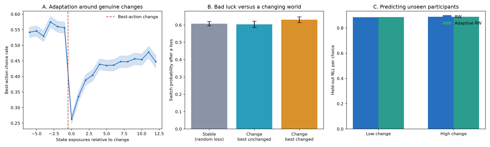

Research question
Main results
Best-action choice rate fell sharply on the first exposure after the best option changed.
Performance recovered across early and later post-change exposures, but did not immediately return to baseline.
A single-surprise learning-rate rule did not reliably improve prediction for unseen participants.

What the behavioural result means
Participants clearly noticed and adapted to genuine changes, but not instantly. Accuracy dropped by 28.8 percentage points at the change point, with a participant-bootstrap 95% interval of −33.3 to −24.5 points. It then improved by 12.8 points during exposures 1–4 and by 19.5 points during exposures 8–12 relative to the first post-change choice.
The pooled switch rate after a loss was 58.3% in stable periods and 62.4% shortly after a change that replaced the best action. However, after comparing the same participants across conditions, the difference was only 0.7 percentage points, 95% CI [−2.2, 3.6]. The apparent pooled difference therefore does not provide reliable evidence that one post-change loss causes selective switching.
Model comparison
| Condition | Fixed RW NLL/choice | Adaptive RW NLL/choice | Adaptive improvement |
|---|---|---|---|
| Low change | 0.8847 | 0.8853 | −0.0006 [−0.0017, 0.0004] |
| High change | 0.8887 | 0.8886 | 0.0002 [−0.0003, 0.0008] |
The adaptive model updated its learning rate from unsigned prediction error. Across folds, its fitted adaptation parameter eta approached zero (0.0022, 0.0007, 0.00003), effectively reducing the model toward fixed-rate RW. Neither high- nor low-change sessions showed a reliable held-out improvement.
Methods in one minute
- Restrict analysis to task-space sessions where reward-probability type changed across blocks.
- Estimate the best displayed arm separately within every block and state using recorded counterfactual outcomes.
- Align state-specific choice sequences to boundaries where that best arm genuinely changed.
- Compare losses during stable periods with losses shortly after a probability change, separating changes that did and did not replace the best arm.
- Fit state-specific fixed RW and surprise-driven adaptive RW models using three-fold cross-validation split by participant.
- Evaluate held-out NLL and bootstrap paired differences at the participant level.
Scientific conclusion and next model
The data show strong behavioural adaptation to genuine probability changes, but the simplest dynamic-learning-rate explanation is not supported. A better next model should represent accumulated evidence for a latent change, rather than react only to the most recent unsigned prediction error.
Two suitable extensions are a Bayesian change-point or hidden-state model, and a GRU benchmark that can use longer action–reward history. If the GRU improves held-out prediction specifically during recovery, its hidden dynamics can then be probed for an evidence-accumulation signal.
Short spoken summary
Limitations
- The analysis uses the 400-file workshop subset, not all 3,177 Azulejos files.
- Best actions are estimated from block-state counterfactual outcomes; short cells may remain noisy.
- The null result applies to one Pearce–Hall-style adaptive rule, not every possible dynamic-learning model.
- A confirmatory full-data analysis should preregister event windows and compare multiple model seeds or alternative change-point formulations.